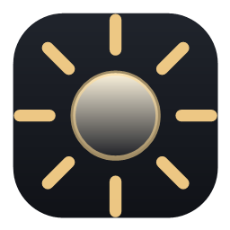

Your laptop's brightness keys, with usable steps at the dark end.
Windows moves brightness in jumps of 10. In a dark room that is the difference between too dark to read and too bright to look at, with nothing in between.
Each bar is one press of the brightness key. Height is the resulting screen brightness — note how many presses land in the dark end.
Probably, if it is a Windows laptop with brightness keys. Nothing is specific to a
vendor, model, or keyboard layout — keys are matched on the standard HID brightness
usages and decoded through each device's own report descriptor, not by key positions
or the Fn state.
| Needs | If it is missing |
|---|---|
| A built-in panel that accepts brightness commands | The tray icon tells you on startup |
| Brightness keys that reach Windows as HID usages | Keys do nothing; the tray menu still works |
Different keys? Teach it. The tray menu has Set up brightness keys: press your darker key, then your brighter one, while it listens to every HID collection on the machine and takes the signal that appears for one and not the other. That covers vendors who use their own encoding, instead of guessing what each one does.
External monitors are not supported. Those need DDC/CI over the video cable — a different mechanism. This drives built-in laptop panels through the display driver.
If it does not work for you, the tray menu has Copy compatibility report: your Windows version, machine model, which method was found, and whether any keys were seen. Nothing personal, and nothing is ever sent on its own — it opens the report so you can read it first.
Almost every decision in this app was forced by a measurement that contradicted the obvious approach. The brightness keys turned out to be invisible to a keyboard hook, the documented API for setting brightness is 60× slower than the one underneath it, and the guard loop that keeps the value in place was — for a while — the very thing preventing it from landing.
The full engineering log is in the repository: what was tried, what was rejected, and the numbers behind each.